<style>
    /* 基础样式：沉浸式阅读体验 */
    body { 
        font-family: -apple-system, BlinkMacSystemFont, "Segoe UI", Roboto, "Helvetica Neue", Arial, sans-serif; 
        line-height: 1.8; 
        color: #333;
        max-width: 800px; 
        margin: 0 auto; 
        padding: 40px 20px; 
        background-color: #fff;
    }

    /* 章节单元 */
    .chapter-unit { margin-bottom: 60px; }

    /* 标题体系 */
    h1 { font-size: 2.2em; color: #2c3e50; border-bottom: 2px solid #eee; padding-bottom: 15px; margin-top: 0; }
    h2 { font-size: 1.6em; color: #34495e; margin-top: 40px; border-left: 5px solid #2980b9; padding-left: 15px; }
    h3 { font-size: 1.3em; color: #2980b9; margin-top: 30px; font-weight: bold; }
    h4 { font-size: 1.1em; color: #555; margin-top: 25px; font-weight: bold; }
    
    /* 正文 */
    p { margin-bottom: 1.5em; text-align: justify; }
    
    /* 科学记数法修正 */
    sup { font-size: 0.75em; vertical-align: super; }

    /* 特殊区域 */
    .sidebar { background: #f7f9fb; padding: 25px; border-left: 5px solid #3498db; margin: 30px 0; border-radius: 4px; }
    .sidebar-title { font-weight: bold; display: block; margin-bottom: 10px; color: #2c3e50; font-size: 1.1em; }
    
    .exercises { background: #fffcf0; padding: 25px; margin: 40px 0; border: 1px solid #f0e6d2; border-radius: 8px; }
    
    /* 图片占位符 */
    .image-placeholder { 
        background: #f8f9fa; border: 1px solid #dee2e6; 
        display: flex; align-items: center; justify-content: center;
        margin: 25px auto 10px auto; 
        color: #6c757d; font-family: monospace; font-size: 0.8em;
        position: relative;
    }
    .image-placeholder::before { content: "🖼️ Image Area " attr(data-bbox); }
    .caption { font-size: 0.9em; color: #666; text-align: center; margin-bottom: 35px; font-style: italic; line-height: 1.4; }
    .caption strong { font-weight: bold; color: #333; font-style: normal; }

    /* 列表与表格 */
    .question-list { padding-left: 20px; }
    .question-list li { margin-bottom: 10px; }
    
    table { width: 100%; border-collapse: collapse; margin: 20px 0; font-size: 0.9em; }
    th, td { border: 1px solid #ddd; padding: 8px; text-align: center; }
    th { background-color: #f2f2f2; color: #333; font-weight: bold; }
    tr:nth-child(even) { background-color: #f9f9f9; }

    /* 概念检查 */
    .concept-check { color: #c0392b; font-weight: bold; margin-top: 20px; margin-bottom: 10px; display: block;}
    .concept-check::before { content: "√ "; }
</style>
<article class="chapter-unit">
<!-- 封面大图 (Page 1) -->
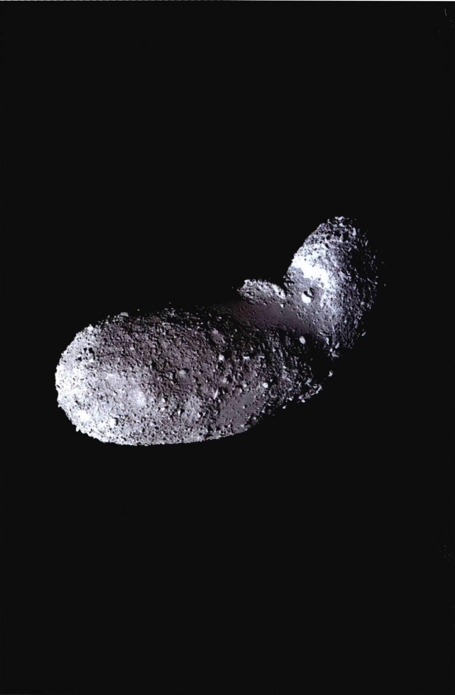
<div class="caption">
<strong>封面图片：</strong> 爱神星（Eros）小行星的高清图像，展示了其不规则的形状和布满陨石坑的表面。
    </div>
<h1>第6章 太阳系</h1>
<h2>比较行星学和太阳系形成模型</h2>
<aside class="sidebar">
<span class="sidebar-title">学习目标</span>
<p>本章的学习将使你能够：</p>
<ul style="list-style-type: disc; padding-left: 20px;">
<li>解释比较行星学对太阳系研究的重要性。</li>
<li>描述太阳系的整体尺度和结构。</li>
<li>总结类地行星和类木行星的主要区别。</li>
<li>识别和描述太阳系内主要的非行星成分。</li>
<li>勾勒造成了我们的行星系统整体性质的太阳系形成理论。</li>
<li>解释类地行星是如何形成的。</li>
<li>比较类木行星形成的领导理论。</li>
<li>说明彗星和小行星是如何形成的，并解释它们在决定行星属性方面的作用。</li>
</ul>
</aside>
<p>在不到一个世代的时间里，我们了解到的关于太阳系——太阳和绕着它转的所有东西——的知识比过去所有世纪的总和还要多。通过研究八颗行星及其卫星，以及无数在行星际空间飘荡的小天体，天文学家们已经积累了关于我们在太空中的家园的丰富全景。</p>
<p>人类的太空探测器已经访问了太阳系中所有的行星，将天文学家能够掌握的范围从类地行星延伸到轨道远离太阳的巨型气态行星。无人驾驶自动探测器的仪器拍摄行星和它们的卫星的特写照片，并在某些情况下进行现场测量。天文学家们已经认识到，所有的太阳系天体，无论大的还是小的，都对推进我们理解地球的宇宙邻居发挥着关键性的作用。</p>
<aside class="sidebar">
<span class="sidebar-title">知识全景</span>
<p>行星绝不是我们太阳系的唯一居民。现代望远镜和自动太空探测器揭示了关于彗星、小行星和大量的行星卫星的诸多信息。讽刺的是，这些太阳系形成之初的“废物”一直在我们身边，告诉了我们太阳系的起源和演化的许多信息。像发现了欧洲之外的新世界的老海员，今天的航天员正堂而皇之的探索地球以外的外星世界。</p>
</aside>
<h2>6.1 太阳系清单</h2>
<p>古代的希腊和其他天文学家都知道，在夜空中有月亮、恒星和五大行星——水星、金星、火星、木星、土星（2.2节）。他们也知道两个其他类型的天体，显然既不是恒星也不是行星。彗星以一种拖着长尾巴，发出纤细的缕缕光线的姿态出现在夜空中，可见期长达数周，然后慢慢从人们的视野中消失。流星则是突然闪现在夜空中，一划而过，通常不到1s后就消失。这些短暂的现象早已为古代天文学家所熟悉，但直到很久以后，它们对于我们理解太阳系大家庭的作用才体现出来。</p>
<h3>发现我们的行星系统</h3>
<p>人类对于太阳系的基本认识，从远古时代到17世纪初大致维持不变，直到望远镜的发明使更详细的观测成为可能。伽利莱·伽利略是第一个利用这种新技术的人。图6.1展示了他的简陋的望远镜。伽利略在17世纪初对金星相位和绕木星旋转的四大卫星的发现，帮助人类改变了宇宙观（2.4节）。</p>

<div class="caption">
<strong>图6.1 早期的望远镜</strong><br/>
        这是一台折射式望远镜，伽利略靠其做出的第一次观测很简单，但其对天文学的影响是不可估量的。[美国国家科学技术博物馆 (Museo della Scienza Scala)、艺术资源，纽约 (Art Resource, NY)]
    </div>
<p>随着技术的进步，关于太阳系的知识快速增加。天文学家们开始发现人类肉眼不可见的天体。到19世纪末，天文学家已经发现了土星环（1659年）、天王星（1781年）和海王星（1846年）、许多行星的卫星以及第一颗小行星——围绕太阳运行的“较小的行星”，大多分布在一个广阔的位于火星和木星之间的带状区域（称为小行星带）中。谷神星是最大的、也是第一个被看见的小行星，它于1801年被发现。19世纪中期的老式大型望远镜如图6.2所示。</p>

<div class="caption">
<strong>图6.2 19世纪的望远镜</strong><br/>
        到19世纪中叶，天文望远镜已经在大小和质量上有了极大的提高。这里展示的是爱尔兰贵族和业余天文学家罗斯伯爵建造的牛顿式反射式望远镜。在75年中，这台口径72in（译注：约1.8m）的设备是地球上最大的望远镜。[比尔科学与遗产基金会 (Birr Scientific &amp; Heritage Foundation)]
    </div>
<p>20世纪带来了光学望远镜的持续改进。科学家发现了成千上万的小行星、另外三颗行星的行星环系统、几十颗卫星和第一个柯伊伯带天体，其轨道在海王星轨道之外。该世纪也看到了非光学——尤其是射电和红外——天文学和空间探测器探索的崛起，每一个都对行星科学领域做出了非常重要的贡献。</p>
<p>20世纪后半叶，人们看到了一个全新的进行行星探测的途径——太空飞行。宇航员们在月球上做实验（见图6.3），众多的无人探测器离开地球，前往所有其他的行星。图6.4显示了2005年勇气号火星车在火星表面勘探的图景，在这张从浅火山口内拍摄的全景图中，它的太阳能电池板最明显。</p>
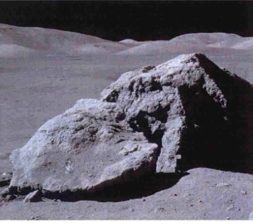
<div class="caption">
<strong>图6.3 月球探测</strong><br/>
        执行阿波罗计划的宇航员在进行月球地质勘探——1972年，进行最后一次载人登月任务的宇航员在澄海里的一块巨石附近探矿。[美国国家航空航天局 (NASA)]
    </div>
<p>按照目前的探索，我们的<strong>太阳系</strong>已知含有1颗恒星（太阳）、8颗行星，169颗卫星环绕这些行星（根据最近的一次统计），8颗小行星和超过100个直径大于300km (200miles) 的小行星柯伊伯带天体，数以万计的更小的（但已有较好研究的）小行星和柯伊伯带天体，大量的直径达数千米的彗星，和无数直径不到100m的流星体。随着我们继续探索我们的宇宙邻居，这份名单无疑还会增加。</p>
<h3>比较行星学</h3>
<p>当我们开始在接下来的几章中遨游太阳系时，我们会设法将每个行星与我们的地球相比较，了解是什么令太阳系成为一个整体。我们将使用强大的<strong>比较行星学</strong>的观点——比较和对比我们遇到的不同的行星的属性——以更好地了解行星的形成和演化的情况。在接下来的章节中，比较行星学将成为我们不可缺少的指南。</p>
<p>我们的目标是发展一个全面的关于行星系统的起源和演化的理论——一个能解释所有或至少是大多数太阳系观测事实的理论。我们将试图回答一些基本问题，如为什么行星X演化成这样，而行星Y却变得完全不同？为什么行星们的轨道如此有序，它们的个体性质却有很大差异？在解决这些问题时，我们会发现行星之间有许多相似之处和共同特点。然而，每个行星也将提出新的问题，以及提供行星运行方式的独特视角。</p>

<div class="caption">
<strong>图6.4 勇气号在火星上</strong><br/>
        勇气号火星车拍摄了数百张照片，在古谢夫撞击坑中创建了这张火星地平线的360°真彩色全景照片。这个自动探测器——中偏右可以看到它的浅浅的轨迹——还测量了土壤和露出发面的岩石的化学和矿物学成分。
    </div>
<p>随着我们解开太阳系的起源之谜，我们可能希望学到一些超越我们自己的行星系统的东西。20世纪90年代中期以来，天文学家已经发现800多颗<strong>太阳系外行星</strong>——围绕其他恒星而不是太阳运转的行星。每年都有许多新的行星被发现（见第12章），我们对它们的观测对现代行星形成理论提供了严格的检验。在发现太阳系外行星之前，这些理论只是基于观察我们自己的太阳系。现在，天文学家们有了一个全新的试验场，在那里，他们可以将理论与现实进行很好的比较。</p>
<p>奇怪的是，目前的数据表明，新发现的行星系统的许多特点和我们的相当不同，这为由来已久的天文学家间关于在宇宙中其他地方存在类似地球的行星和生命的可能性的争论注入了新的活力。天文学家要想做出明确结论，确定类似我们这样的行星系统是否存在还需要一段时间。</p>
<span class="concept-check">概念理解检查：对太阳系外行星在哪些方面的观测可能帮助我们了解我们自己的太阳系？</span>
<h2>6.2 测量行星</h2>
<p>表6.1列出了八颗行星的一些基本轨道和物理参数，同时也列出了其他一些知名的太阳系天体的相应参数（太阳、月亮、冥王星、小行星和彗星）作为比较。请注意，太阳的质量是第二大的天体——木星——的一千多倍，显然是太阳系的主宰者。事实上，太阳包含约99.9%的太阳系物质。行星们——包括地球——相比之下微不足道。</p>
<p>表6.1中所列的大部分数字可以使用第1章和第2章中描述的方法来确定。在这里，我们列出一个简短的摘要来说明表6.1中的参数及测量所使用的技术：</p>
<ul>
<li>每颗行星到太阳的<strong>距离</strong>都遵从开普勒定律，太阳系的距离标度通过雷达对金星测距来确定。(2.6节)</li>
<li>行星的<strong>恒星轨道周期</strong>（即相对于恒星背景走一圈的时间）可以通过反复观察其在天空中的位置进行测量，注意要适当考虑地球绕太阳的运动。(2.5节)</li>
<li>行星的<strong>半径</strong>可以通过测量行星的视大小——行星在天空中从一侧到另一侧看上去的张角，然后用初等几何来解决。（详细说明1-2）</li>
<li>拥有卫星的行星的<strong>质量</strong>，也许可以只观测卫星绕行星运转的情况，就能通过牛顿运动和引力定律计算出来。（详细说明2-2）而这些轨道的大小，如同行星本身的大小一样，可以通过几何学来确定。</li>
<li>水星和金星的质量（以及月球和小行星谷神星的质量）有点难以准确判断，因为这些天体没有自己的天然卫星。然而，它们的质量可以通过仔细测量它们的引力对其他行星或邻近天体的影响来测量。水星和金星产生虽然微小但可测量的对彼此轨道以及对地球的影响。月球也导致地球运动的微小“摆动”，因为这两个天体绕它们共同的质量中心旋转。</li>
<li>这些确定质量的技术在一个多世纪前已被天文学家们所熟知。今天，表6.1中列出的绝大多数天体的质量已通过它们的引力对从地球上发射的人造卫星和空间探测器的影响而被准确地测定。只有对谷神星的质量仍然知之甚少，主要是因为该小行星的引力太微弱了。</li>
<li>行星的<strong>自转周期</strong>，原则上可以通过观测其表面特征随着行星自转交替出现和消失来简单地进行判断。然而，对大多数行星而言，这是很难做到的，因为它们的表面特征难以看见，甚至可能根本不存在。水星的表面特征很难区分，金星的表面完全被云遮挡，木星、土星、天王星和海王星根本没有固体表面——随着我们往可见的云层下越看越深，它们的大气越来越厚并逐渐变成液态。我们将在后面的章节中介绍测量这些行星自转周期的方法。</li>
<li>表6.1中的最后两列列出了每个天体的<strong>平均密度</strong>。密度是对物质“紧凑”程度的度量。平均密度的计算方法是将一个物体的质量（单位可以为千克）除以它的体积（单位可以为立方米）。例如，我们可以很容易地计算出地球的平均密度。地球的质量，可以通过观测月球的轨道来确定，大约为 $6.0 \times 10^{24}$ kg。（详细说明2-2）。地球的半径R大约为6400km，所以它的体积为 $\frac{4}{3}\pi R^3 \approx 1.1 \times 10^{12}$ km<sup>3</sup>，或者写成 $1.1 \times 10^{21}$ m<sup>3</sup>。(1.6节) 将质量除以体积，我们得到地球的平均密度约5500kg/m<sup>3</sup>。</li>
</ul>
<p>平均下来，地球每立方米体积中有约5500kg物质。作为比较，普通水的密度为1000kg/m<sup>3</sup>，地球表面上的岩石密度范围在2000~3000kg/m<sup>3</sup>，铁的密度约为8000kg/m<sup>3</sup>。地球的大气密度（在海平面处）为每立方米仅仅几千克。由于许多天文学家都比较熟悉CGS单位制（厘米克秒制）中的密度（克每立方厘米，简称g/cm<sup>3</sup>，1kg/m<sup>3</sup> = 0.001g/cm<sup>3</sup>）。表6.1同时列出了密度的SI和CGS单位。</p>
<!-- 表6.1 -->
<table>
<caption><strong>表6.1 一些太阳系天体的参数</strong></caption>
<thead>
<tr>
<th>天体</th>
<th>轨道半长径/AU</th>
<th>轨道周期/地球年</th>
<th>质量/地球质量</th>
<th>半径/地球半径</th>
<th>已知卫星数量</th>
<th>自转周期/天</th>
<th>平均密度/(kg/m<sup>3</sup>)</th>
<th>平均密度/(g/cm<sup>3</sup>)</th>
</tr>
</thead>
<tbody>
<tr><td>水星</td><td>0.39</td><td>0.24</td><td>0.055</td><td>0.38</td><td>0</td><td>59</td><td>5400</td><td>5.4</td></tr>
<tr><td>金星</td><td>0.72</td><td>0.62</td><td>0.82</td><td>0.95</td><td>0</td><td>-243</td><td>5200</td><td>5.2</td></tr>
<tr><td>地球</td><td>1.0</td><td>1.0</td><td>1.0</td><td>1.0</td><td>1</td><td>1.0</td><td>5500</td><td>5.5</td></tr>
<tr><td>月球</td><td>—</td><td>—</td><td>0.012</td><td>0.27</td><td>—</td><td>27.3</td><td>3300</td><td>3.3</td></tr>
<tr><td>火星</td><td>1.52</td><td>1.9</td><td>0.11</td><td>0.53</td><td>2</td><td>1.0</td><td>3900</td><td>3.9</td></tr>
<tr><td>谷神星(小行星)</td><td>2.8</td><td>4.7</td><td>0.00015</td><td>0.073</td><td>0</td><td>0.38</td><td>2700</td><td>2.7</td></tr>
<tr><td>木星</td><td>5.2</td><td>11.9</td><td>318</td><td>11.2</td><td>63</td><td>0.41</td><td>1300</td><td>1.3</td></tr>
<tr><td>土星</td><td>9.5</td><td>29.4</td><td>95</td><td>9.58</td><td>56</td><td>0.44</td><td>700</td><td>0.7</td></tr>
<tr><td>天王星</td><td>19.2</td><td>84</td><td>15</td><td>4.0</td><td>27</td><td>-0.72</td><td>1300</td><td>1.3</td></tr>
<tr><td>海王星</td><td>30.1</td><td>164</td><td>17</td><td>3.9</td><td>13</td><td>0.67</td><td>1600</td><td>1.6</td></tr>
<tr><td>冥王星(柯伊伯带天体)</td><td>39.5</td><td>248</td><td>0.002</td><td>0.2</td><td>3</td><td>-6.4</td><td>2100</td><td>2.1</td></tr>
<tr><td>海尔-波普(彗星)</td><td>180</td><td>2400</td><td>1.0×10<sup>-9</sup></td><td>0.004</td><td>—</td><td>0.47</td><td>100</td><td>0.1</td></tr>
<tr><td>太阳</td><td>—</td><td>—</td><td>332 000</td><td>109</td><td>—</td><td>25.8</td><td>1400</td><td>1.4</td></tr>
</tbody>
</table>
<p style="font-size: 0.8em; text-align: center;">① 负的自转周期表示该行星的自转方向与其绕太阳公转的方向相反。</p>
<span class="concept-check">概念理解检查：天文学家如何确定遥远行星的参数（比如质量、半径和密度）？</span>
<h2>6.3 太阳系的整体布局</h2>
<p>就地球的标准而言，太阳系是巨大的。从太阳到海王星轨道以外的柯伊伯带的距离大约50AU，超过100万倍地球半径，大约20,000倍地球到月球的距离（图6.5）。然而，尽管太阳系非常广阔，行星却都位于非常接近太阳的位置（就天文尺度而言）。即使是柯伊伯带的直径也仅有1/1000光年，而最近的恒星距离是几光年。</p>
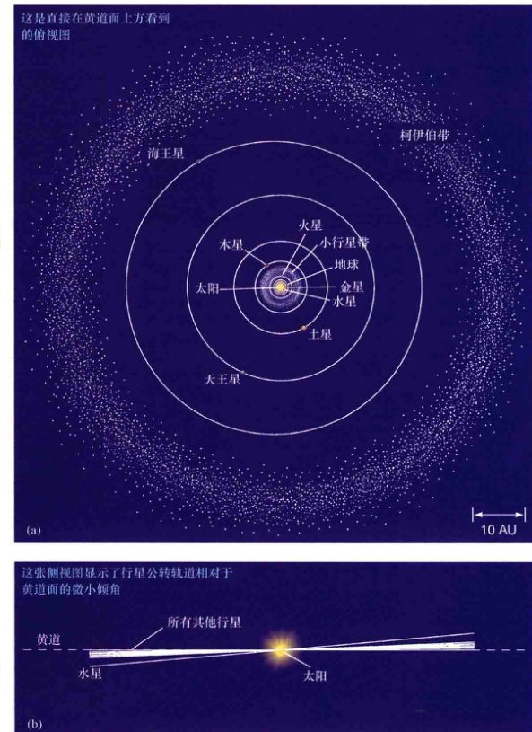
<div class="caption">
<strong>图6.5 太阳系</strong><br/>
        太阳系的主要天体包括太阳、行星、小行星。除了水星，行星轨道几乎是圆形的，并且（a）几乎在同一平面上。（b）逐渐远离太阳时，相邻行星轨道之间的距离逐渐增加。整个太阳系在100 AU的尺度内——大致相当于柯伊伯带的直径——是非常扁平的。
    </div>
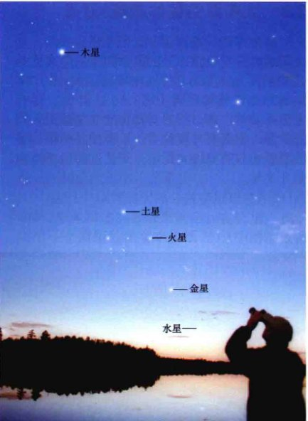
<div class="caption" style="text-align: left; width: 40%; float: left;">
<strong>图6.6 行星联珠</strong><br/>
        此图片显示了六颗行星——水星、金星、火星、木星、土星和地球——在2002年4月的一次行星联珠。太阳和新月刚刚落到地平线以下。[J. 罗德里格斯 (J. Lodriguss)]
    </div>
<p>离太阳最近的行星是水星，再向外依次是金星、地球、火星、木星、土星、天王星和海王星。在第2章中，我们看到了行星轨道的基本性质：其路径都是椭圆形，太阳位于（或非常接近）一个焦点上；(2.5节) 只有最里面的行星——水星，是在低偏心率的轨道上运行的。因此，我们可以合理地认为大多数行星的轨道接近于圆形，太阳位于圆心。请注意行星轨道并不是均匀分布的，越往外，轨道之间距离越远。</p>
<p>所有行星绕太阳公转的轨道方向，从地球北极上方看的话，都是逆时针的，而且这些轨道几乎和地球位于同一平面（黄道面）上。水星轨道稍有偏离，与黄道面的夹角大约为7°。不过，如图所示，我们可以认为，太阳系是相当扁平的——它垂直于黄道面的“厚度”只占其直径很小的比例。如果我们能在黄道面上一个距离太阳约50 AU的有利位置看行星的轨道，你会发现没有一个轨道会有明显的倾斜。图6.6是2002年4月一次难得的行星联珠时拍摄的水星、金星、火星、木星和土星的照片。这五颗行星（偶尔）会出现在天空中的同一片天区，这在很大程度上是因为它们的轨道在太空中几乎位于同一平面上。</p>
<span class="concept-check">概念理解检查：为什么说太阳系看上去是“扁平”的？</span>
<h2>6.4 类地行星和类木行星</h2>
<p>在大尺度上，太阳系为我们展示出了有序的运动：行星几乎在同一个平面上，有几乎同心的、接近圆形的椭圆形轨道，以同样的方向绕着太阳运动，其轨道间隔稳定地逐渐增加。虽然不同行星的具体细节并没有太多规律可循，但其整体特征可以让我们将它们划分为两大类。</p>
<h3>行星性质</h3>
<p>图6.7将行星与太阳以及行星互相之间进行了比较。我们太阳系内部和外部的成员可以根据它们的密度和其他物理性质进行明确的区分。内行星——水星、金星、地球和火星——个头小，密度高，呈固态。外行星——木星、土星、天王星和海王星——个头大，密度低，呈气态。</p>
<p>因为水星、金星和火星的物理和化学性质与地球有点类似，所以这四个最里面的行星被称为<strong>类地行星</strong>。[“类地” (terrestrial) 一词源于拉丁词terra，意思是“土地”或“地球”。] 四颗类地行星都位于内部距太阳约1.5 AU的范围内。它们都个头小且质量相对较低——地球是四个中个头和质量最大的——都主要由岩石构成，拥有固态表面。</p>
<p>木星、土星、天王星和海王星也是互相之间性质相似，但它们的化学和物理性质却与类地行星截然不同。它们被称为<strong>类木行星</strong>，以这个分类中最大的行星——木星来命名。[“类木” (jovian) 一词来自Jove，是罗马神朱庇特(Jupiter)的另一个名字]。类木行星的世界远离太阳轨道。它们都远大于内行星，成分和结构也与内行星相当不同。它们没有任何固态表面，其外层主要由富含氢和氦的轻气体构成。</p>
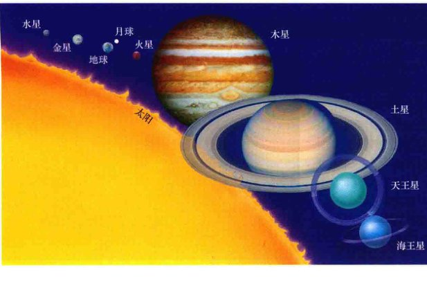
<div class="caption">
<strong>图6.7 太阳和行星</strong><br/>
        行星和太阳的相对大小，按比例绘制。请注意类木行星比地球和其他类地行星大多少，太阳又是多么巨大。解释这个行星两极分化是比较行星学的一个重要目标，但绝不是唯一的一个。
    </div>
<h3>类地行星互相间的不同</h3>
<p>尽管类地行星的轨道和构成相似，但它们之间仍有许多重要的差异，我们在这里列举了一些，作为第4~7章的更详细的数据的前奏：</p>
<ul style="list-style-type: disc;">
<li>所有四个类地行星都有大气，但大气与我们所能想象的颇为不同，从水星上的接近真空，到金星上的炼狱般浓密酷热。</li>
<li>地球是唯一在大气中有氧气，在表面上有液态水的行星。</li>
<li>四个行星的表面条件彼此非常不同，从水星上贫瘠、布满了撞击坑的地形到金星上广泛活跃的火山。</li>
<li>地球和火星的自转周期大致相等——转一圈要24h——但水星和金星自转一圈却需要几个月，而且金星的自转方向与其他行星相反。</li>
<li>地球和火星有卫星，但水星和金星没有。</li>
<li>地球和水星有可测量的磁场，不过强度非常不同，而金星和火星都没有。</li>
</ul>
<p>比较类地行星的平均密度，使我们能够多知道一些关于它们的整体成分信息。然而，在做比较时，我们必须考虑外层的重量如何压缩行星的内层。当我们这样做时，我们发现，类地行星未被压缩的密度——即未被任何自身的重力所压缩的密度——随着我们从太阳向外移动而减少：5300kg/m<sup>3</sup>, 4400kg/m<sup>3</sup>, 4400kg/m<sup>3</sup>, 3800kg/m<sup>3</sup> 分别对应水星、金星、地球、火星的未压缩密度。质量最大的行星——地球和金星——的压缩量最大，水星和火星则少得多。部分基于上述数字，行星科学家们认为，地球和金星的整体组成非常相似。水星的高密度意味着它包含致密材料的比例较高——很有可能是镍或铁。火星更低的密度可能意味着它的致密成分含量较低。</p>
<p>在这四个不同的行星的演化中寻找共同线索不是一件简单的事！比较行星学的目的是要了解为何四颗行星的物理性质大致相同，而细节上却又有如此多的不同。</p>
<h3>类地行星和类木行星比较</h3>
<p>虽然有所不同，但与类木行星相比，类地行星仍然看上去彼此相似。也许可以直截了当地说：类木行星的所有方面都与类地行星不同。我们将在第8~10章讨论类木行星的更多细节。在这里，我们强调一些类地行星和类木行星之间的关键区别：</p>
<ul style="list-style-type: disc;">
<li>类地行星互相之间距离近且靠近太阳；类木行星互相之间距离远且远离太阳。</li>
<li>类地行星小、致密，是石质的；类木行星是大的气态行星，含有大量的氢和氦（最轻的元素）——这些元素在内行星身上是罕见的。</li>
<li>类地行星有固体表面；而类木行星没有（它们稠密的大气随着深度而密度增加，最终与内部的液体融合在一起）。</li>
<li>类地行星即便有磁场也很微弱；而类木行星都有强磁场。</li>
<li>所有四颗类木行星都被认为含有巨大而高密度的“类地”核心，质量大约为10~15倍地球质量。随着远离太阳，这些核心占每颗行星总质量的比重越来越大。</li>
<li>类地行星只有三颗卫星；类木行星每颗都有许多卫星；卫星们彼此都不一样，跟月球也不一样。</li>
<li>此外，所有的类木行星都有环；而类地行星都没有。</li>
</ul>
<p>行星科学家的工作是要提出一个理论，既能解释类木行星的特征，也能解释类地行星的特征，还能解释两类行星间的相似和不同。第6.6和6.7节提出了理论的概要。稍后、在第12章，我们将更深入地讨论该理论，来看当面对我们的以及其他行星系统的观测细节时，它的预言究竟怎么样。(1.2节)</p>
<span class="concept-check">概念理解检查：为什么天文学家要勾勒出这样的一个内行星和外行星之间的明确区别？</span>
<aside class="sidebar">
<span class="sidebar-title">探索6-1：引力“弹弓”</span>
<p><strong>天体力学</strong>——对引力相互作用的天体运动的研究——对希望发射有人和无人探测器遨游整个太阳系的科学家和工程师们而言是一个重要的工具。现在，自动探测器可以以令人惊叹的准确轨道被发射和运行，打个比方说就是“在一个几十亿千米的台球桌上击球入洞”。几乎没有时间窗口的火箭发射、飞行过程中对路径的偶尔微调，行星际导航仪引导远程控制飞船穿越一个假想的只有几千米宽，十亿千米之长的“窗口”。</p>
<p>然而，将航天器发送到另一个星球需要很大的能量——远远超过直接由火箭从地球发射或先用航天飞机运送到轨道上再进行发射所能提供的能量。面对这些限制，任务科学家经常会利用他们的天体力学知识让探测器进行“弹弓”式飞行——这可以将一个行星际探测器转移到一个更有活力的轨道上，也有助于调整飞行方向，并且不增加成本！</p>
<p>第一张图是引力弹弓，或引力辅助在飞行中的示意图。航天器接近一颗行星，越来越近，然后沿着新的轨道远离。显然，飞船的运动方向被这次交会所改变。飞船的速度也被行星的引力在沿着行星运动的方向上加快，不过不太明显。通过仔细选择飞向行星的轨道，飞船可以被加速（从行星“后面”经过，如下图所示）或减速（从前面经过），幅度可以高达两倍的行星轨道速度。当然，没有“免费的午餐”——航天器从这颗行星的运动获得能量，或者将航天器自身的能量传递给这颗行星的运动，都会导致行星的轨道发生非常微小的改变。然而，由于行星的质量比飞船大太多，所以这个影响对行星而言微不足道。</p>

<p>这样的弹弓式飞行已在内和外行星的任务中被多次使用。第二幅图显示了“旅行者号”太空探测器穿过外太阳系的飞行轨迹。（见第8~10章）巨行星们在每次相遇时都用引力拉扯飞船，让飞船获得可观的额外速度。“旅行者1号”现在到了太阳系平面的上方，在与土星相遇后被偏转和抛出。“旅行者2号”进行了“宏大之旅”，探索了四个类木行星。它现在位于冥王星轨道之外的柯伊伯带上。最近，1997年发射的“卡西尼号”土星探测器，在2004年到达目的地。它得到了4次引力协助——2次来自金星，1次来自地球，1次来自木星。到达土星系统后，卡西尼号利用土星和其卫星的引力进行了一系列复杂的飞行，旨在使其接近所有的主要卫星，以及土星本身。NASA目前的新视野号任务中使用了来自木星的引力协助推动飞船飞往冥王星的轨道。</p>

<p>每次与一颗卫星的相遇都实现了一次弹弓效应——有时加速，有时减速，每次都移动至不同的轨道——每次效应都经过了仔细计算，并且早在卡西尼号离开地球时的很长时间之前就如同算好了。</p>
</aside>
<h2>6.5 行星际物质</h2>
<p>在8颗已知的行星之间的广阔空间中，运行着无数结实的岩石和冰块，大多体积较小，有少数则非常巨大。它们都绕着太阳转，许多轨道偏心率很高。太阳系的这最后一种成分是<strong>行星际物质</strong>——宇宙中的“碎片”，大到巨大的小行星和柯伊伯带天体，中到较小的彗星和较小的小行星，小到弥漫在行星际空间中的最小的行星际尘埃颗粒——的集合（见第11章）。</p>
<p>较大的天体发生碰撞并分裂成更小的部分时会产生粉尘，然后，它们再次碰撞，慢慢变成小碎块，并最终融入太阳或被太阳风吹走——不断地从太阳向外吹出的遍及整个太阳系的高能带电粒子流吹走。在可见光波段检测这些尘埃是相当困难的；但红外波段的研究表明，行星际空间中包含令人惊讶的大量尘埃。就类地行星的标准而言，我们的太阳系是一个非常好的真空，但就恒星际和星系际空间的标准而言，则是非常“多尘”的。</p>
<p><strong>小行星</strong>[见图6.8(a)] 和流星体的主要成分是岩石，有点像类地行星的外层。两者之间的区别仅仅是大小：任何直径大于100m（对应到质量约10000吨）的天体，通常被称为小行星，更小的东西被称为流星体。它们的总质量小于月球，所以这些东西对当今的行星和它们的卫星的运作并不发挥重要作用。但是对它们的研究是至关重要的，因为它们提供了对一些非常基本的问题——关于我们的行星际环境以及我们的太阳系诞生后不久看上去像什么样子——的关键回答。这些天体中的许多是由自太阳系形成之初就很难发生变化的物质构成的。此外，它们还经常以陨石（它们在地球大气层中没有被完全烧毁而最终坠落地面的部分，详见11.4节）的形式自己来到我们的家门口，使我们能够仔细研究它们，而无须从空间中获取它们。</p>
<p><strong>彗星</strong>，如图6.8(b)所示，完全不同于其他太阳系小天体。它们主要由冰而不是岩石构成（尽管它们确实包含一些岩石材料），它们的直径通常在1~10km范围内。它们的化学成分非常类似外行星的一些冰卫星。相比小行星和流星体，彗星代表着真正古老的材料——自从它们在很久以前和太阳系的其他部分一起形成时，绝大多数到现在可能还没有任何重大的改变（见第12章）。彗星物质进入地球大气层的话，无法完整地到达地球表面，所以直到最近 (11.2节)，天文学家才有机会得到彗星物质的实际样本。然而，一些彗星被极度拉长的轨道带到太阳附近，如图6.8(b)所示，其表面蒸发并发出辐射，科学家们能够通过对它们的辐射进行光谱研究来确定它们的化学组成。</p>
<p>最后，在最外面的类木行星海王星之外是<strong>柯伊伯带</strong>——主要由冰组成的一条“外小行星带”，充满类彗星天体，直径范围从1km到超过1000km。由于其小尺寸和很远的距离，直到最近——主要自20世纪90年代中期以来——已知的绝大多数柯伊伯带天体才被发现。然而，这类天体中最有名的成员——<strong>冥王星</strong>[如图6.8(c)所示]——被发现得要早得多，它现在是天文学界一个具有争议性的话题。冥王星在1930年被发现，最初被归类为行星。然而，它不适合之前所描述的分类——就质量和组成来说，相比类地行星或类木行星，它与类木行星的冰卫星具有更多的共同点。其结果是，许多天文学家质疑它的“行星”地位，这种意见随着已知的柯伊伯带天体数量的稳步增长而变得更加强烈。</p>
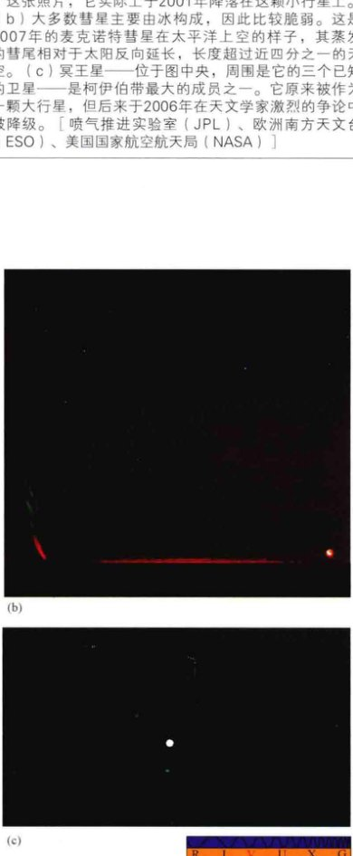
<div class="caption">
<strong>图6.8 小行星和彗星</strong><br/>
        (a) 小行星，类似流星体，一般由岩石物质组成。这颗小行星叫爱神星，约34km长。近地小行星探测器拍摄了这张照片，它实际上于2001年降落在这颗小行星上。<br/>
        (b) 大多数彗星主要由冰构成，因此比较脆弱。这是2007年的麦克诺特彗星在太平洋上空的样子，其蒸发的彗尾相对于太阳反向延长，长度超过近四分之一的天空。<br/>
        (c) 冥王星——位于图中央，周围是它的三个已知的卫星——是柯伊伯带最大的成员之一。它原来被作为一颗大行星，但后来于2006年在天文学家激烈的争论中被降级。[喷气推进实验室(JPL)、欧洲南方天文台(ESO)、美国国家航空航天局(NASA)]
    </div>
<p>随着几个大小与冥王星类似的柯伊伯带天体被发现——甚至至少有一个比冥王星更大的天体，绕太阳公转的轨道比冥王星更远——这场争论达到白热化。正如在第11.3节所做的进一步讨论，2006年，天文学家决定，冥王星不再被归类为大行星，而是一颗<strong>矮行星</strong>。它是柯伊伯带中已知最大的天体，但不再被认为属于类地或类木行星。</p>
<span class="concept-check">概念理解检查：为什么天文学家对行星际物质如此感兴趣？</span>
<h2>6.6 太阳系是如何形成的？</h2>
<p>在过去的40年中，行星际探测器大大增加了我们对太阳系的认识（见探索6-2），它们的数据形成了对接下来八个章节的讨论非常重要的基础。不过，我们可以了解我们的行星系统的整体结构——在第6.3和6.4节中列出的基本组成——而不必详述它的细节。事实上，早在太空时代之前的许多年，现代行星形成的理论的一些关键原理就被提出。我们在这里列出了太阳系是如何产生的“标准”视图。这幅图景将成为我们即将讨论的行星、它们的卫星、行星际空间物质的基础。</p>
<h3>太阳系特征</h3>
<p>任何太阳系的起源和形成理论必须符合已知事实。我们的太阳系作为一个整体，已知有八个突出的特征：</p>
<ol class="question-list">
<li>每颗行星在空间中相对独立。行星的轨道离中心太阳的距离逐渐变大。它们不聚集在一起。每个行星到太阳的距离往往是其内侧邻居到太阳距离的两倍。</li>
<li>行星的轨道几乎是圆形的。事实上，除了水星——我们将认为这是一种特殊情况——各行星的轨道都接近于一个完美的圆。</li>
<li>行星的轨道几乎位于同一平面上。行星轨道划出的平面被准确地对准，相差在几度之内，仅水星有一点轻微的异常。</li>
<li>行星的公转轨道方向（从地球的北极上方看为逆时针）与太阳自转的方向一致。几乎太阳系中的所有大尺度运动（彗星轨道除外）都是在同一平面上，具有同样的公转方向。这个平面是太阳的赤道面，这个方向是太阳的自转方向。</li>
<li>我们的行星系统是高度分化的。内部的类地行星特点是密度高、大气适量、自转速度慢，以及很少或根本没有卫星。相比之下，远离太阳的类木行星密度低，大气浓密。</li>
<li>小行星是很古老的，并表现出一系列既不像内行星又不像外行星或它们卫星的特点。粗略看，小行星有着大量的行星性质。然而，它似乎是由古老的材料组成的。撞击地球的陨石是已知的最古老的岩石。</li>
<li>柯伊伯带是超出了海王星轨道的小行星大小的冰天体的集合。冥王星是此类天体中已知的最大成员。</li>
<li>奥尔特云中的彗星是原始的冰质碎片，轨道不在黄道面上，主要存在于距离太阳很遥远的地方。其组成虽然类似于柯伊伯带，但奥尔特云是外太阳系一个完全不同的部分。</li>
</ol>
<p>所有这些观察到的事实合在一起，强烈暗示我们，太阳系至少在大尺度上有高度的秩序。整个系统不是随机的各种各样的天体，这样或那样的自转或公转。相反，整体组织指向单一的起源——发生在很久以前的古老的但一次性的事件！</p>
<h3>星云收缩</h3>
<p>最早的太阳系形成的日心说模型之一也许可以追溯到17世纪的法国哲学家笛卡儿。想象一下，一个大型的星际尘埃和气体云（叫作“星云”），尺度一光年左右。现在假设，由于一些外部的影响，例如与其他星际云的碰撞或者是附近的恒星爆炸，星云在自身的引力影响下开始收缩。随着自身的缩小，它变得更密和更热，最终在中央形成一颗恒星——太阳。笛卡儿认为，随着太阳在星云热的核心中形成，行星和它们的卫星在星云冷的外围区域形成。换句话说，行星是恒星形成过程中的副产品。</p>
<p>1796年，法国数学家、天文学家皮埃尔·西蒙·拉普拉斯以一个更加定量的方式发展了笛卡儿的思想。他表示，根据数学上的角动量守恒（详细说明3-1）的要求，我们假想的星云随着收缩而旋转加快。一个旋转质量体的大小减少，必须由旋转速度的增加来平衡，而后者反过来会导致星云的形状随着它的坍缩而改变。离心力（由于旋转）倾向于在垂直于旋转轴的方向上反抗收缩，于是导致星云沿旋转轴的坍缩更快。正如图6.9所示，这些碎片最终拼合成一个扁平形状的原始太阳系。这一注定要成为我们的太阳系的旋转质量体通常被称为“<strong>太阳星云</strong>”。</p>
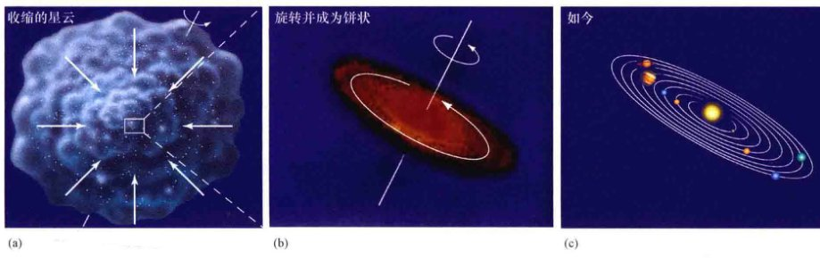
<div class="caption">
<strong>互动图6.9 星云收缩</strong><br/>
        (a) 角动量守恒要求，一个收缩的旋转的星云必然随着它尺寸的减小而加速旋转。(b) 最终，原始太阳系变成像一个巨大的旋转煎饼。中心的大块物质最终形成了太阳。(c) 从星云形成的行星，继承了旋转和扁平的形状。
    </div>
<aside class="sidebar">
<span class="sidebar-title">探索6-2：太空探测器对太阳系的探测</span>
<p>自20世纪60年代以来，已经有几十个无人驾驶太空探测器走遍了整个太阳系。所有的行星都被近距离探测过了，自动探测器同时还造访了许多彗星和小行星。这些探测器对我们了解我们自己的行星系统的冲击是长期而革命性的。</p>
<p>横跨这两页的时间线显示了自20世纪60年代太空时代的黎明以来的所有主要探测器。总之，它们已经重新定义了我们对我们的“宇宙后院”的看法。在这里，我们着重介绍几个最重要的探测器。</p>
<p><strong>水星：</strong> 到目前为止，只有两个航天器访问过水星。在20世纪70年代中期，水手10号执行了一系列对水星的飞越任务。30年后，NASA的信使号探测器在2011年进入绕水星的轨道。</p>
<p><strong>金星：</strong> 探测金星的太空探测器比探测任何一个其他行星的都多。苏联在20世纪60年代时处于领先地位。此后，美国（先驱者号和麦哲伦号）和欧洲（金星快车号）派出了更多的探测器。</p>
<p><strong>火星：</strong> 火星一直是自动探测器非常热衷于探索的目标。美国发射了超过十几个探测器到这颗“红色行星”的轨道上，并常常降落在其表面。20世纪60年代，美国的水手号探测器首先来到火星。70年代的海盗号计划是NASA最优秀的任务之一，两艘探测器安全着陆在火星上。20世纪90年代后期以来，一系列自动探测器运行在火星轨道上和降落到其表面。</p>
<p><strong>外太阳系：</strong> 两个旅行者号飞船在1977年离开地球。1979年3月（旅行者1号）和7月（旅行者2号）分别到达木星。每个探测器都带有精良的设备用于研究木星的磁场、无线电、可见光等。旅行者1号和2号都利用木星的引力到达土星。旅行者2号非常成功地继续进行这样一个“伟大之旅”——探索外行星——天王星和海王星。</p>
<p>在过去的20年中，对外太阳系的探索一直是美国伽利略号木星探测器（1995年抵达）和美国-欧洲的卡西尼号土星探测器（2004年到达）的研究领域。</p>
</aside>
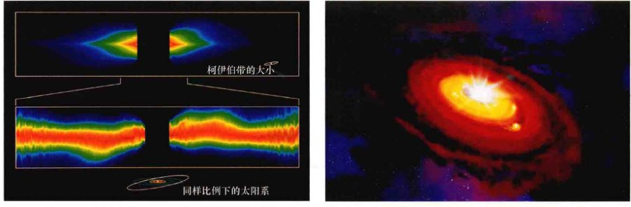
<div class="caption">
<strong>图6.10 绘架座</strong><br/>
        (a) 在这里使用伪彩色是为了强调这样一幅视图——一个热物质的盘环绕一颗恒星——绘架座。下方图像是这个盘内侧部分的特写，其弯曲可能是由看不见的伴星的引力造成的。(b) 这张物质聚集成盘的艺术概念图展示了一个热盘，一颗年轻恒星位于其中央，一些彗星大小 or 更大的天体正在形成。斑驳的尘埃弥漫了这一幕场景，因为这些原行星的区域可能是很“脏”的。[美国国家航空航天局 (NASA); D. 贝里 (D. Berry)]
    </div>
<p>如果我们现在简单地假设，行星从这些旋转的原料中形成，并且每个行星在其附近积累大量原料，那么我们已经可以理解许多在今天我们的行星系统中观测到的大尺度结构的起源了，比如行星轨道成圆环状，以及它们几乎在同一平面上向同一方向转动这一事实[见图6.9(c)]。行星从这样的盘中形成的观点被称为“<strong>星云理论</strong>”。</p>
<p>天文学家相信，太阳星云形成了这样的盘，是因为我们看到了其他恒星周围有类似的盘。图6.10(a)显示了恒星绘架座周围的可见光图像，该恒星离太阳约50光年。从恒星本身发出的光线被去除，并通过计算机对图像进行增强，结果显示出一个淡淡的盘（在这里几乎是侧视的）。它的直径大约是1000AU——大约是柯伊伯带直径的10倍。天文学家认为，我们正在目睹绘架座的形成阶段——类似于我们的太阳在46亿年前经历过的那样。图6.10(b)显示了一个该盘的艺术概念图。我们假设所有的行星系统在它们演化的早期都经过了这一阶段。</p>
<h3>凝聚理论</h3>
<p>科学理论必须随着新数据的产生而不断地进行测试和完善。(1.2节)，不幸的是，对于拉普拉斯的星云理论，虽然它的关于太阳星云的崩溃和扁平化的描述基本上是正确的，但我们现在知道，温暖气体盘不会形成后来能演变成行星的物质团块。事实上，现代计算机的计算预测正好相反：气体中的团块会趋于分散，而不是聚合。不过，<strong>凝聚理论</strong>——大多数天文学家青睐的模型——以老的星云理论为基础，结合其基本的物理推理与星际化学的新信息，以避免原始理论中的大多数问题。</p>
<p>新的关键成分是太阳星云中存在的<strong>星际尘埃</strong>。天文学家们现在认识到，恒星之间的空间布满了微小的尘埃颗粒，是许多死亡了很长时间的恒星喷出的物质的积累。这些尘埃颗粒可能在老年恒星的凉爽的气体环境中形成，然后通过吸积银河系星际气体中的原子和分子而增长。最终的结果是，我们整个银河系中充斥着微型块状的冰质和岩质物质，典型尺寸约为10<sup>-5</sup>m。图6.11显示了在太阳附近发现的许多这样的充满尘埃的一个地区。</p>
<p>尘埃颗粒在气体星云的演变中扮演了两个重要角色。首先，尘埃可以有效地以红外辐射的形式带走热量，帮助冷却温暖的物质。由于星云的冷却，其分子的移动速度变慢，内部压力降低，并允许星云更容易在引力的影响下收缩。第二，作为<strong>凝结核</strong>——微粒可以吸附其他原子，形成质量越来越大的球——尘埃颗粒大大加快了聚集足够多的原子形成行星的过程。这个过程类似雨滴在地球大气层形成的方式：空气中的灰尘和烟尘充当了周围水分子簇的凝结核。</p>
<aside class="sidebar">
<span class="sidebar-title">详细说明6-1：角动量</span>
<p>大多数天体都在自转。行星、月亮、恒星和星系都有一定的<strong>角动量</strong>，我们可以将其定义为自转物体在自转时保持转动的倾向。对一个物体而言，角动量是与质量或能量同样重要的参数。</p>
<p>首先考虑一个简单的情况——做线性运动的动量，被定义为物体的质量和速度的乘积，即：<strong>线性动量 = 质量 × 速度</strong>。</p>
<p>线性动量是在没有外力的情况下，一个物体保持在一条直线上运动的倾向。类似地，角动量是一个描述物体转动的参数，它用来衡量物体保持自转倾向的程度。</p>
<p>直观地说，物体质量越大，或者体积越大，或者转动越快，就越难停止。事实上，角动量取决于物体的质量，自转速度（每秒的转速）和半径，具体说就是：</p>
<p style="text-align: center;"><strong>角动量 ∝ 质量 × 转动速度 × 半径<sup>2</sup></strong></p>
<p>根据牛顿运动定律，在任何时候都倾向于持续。换言之，在物体有任何物理变化之前、期间和之后，线性动量和角动量都会保持恒定（只要没有外力作用于物体）。例如，如果自转的圆形物体开始收缩，它的转动速度会更快，使“质量 × 转动速度 × 半径<sup>2</sup>”保持恒定。收缩的圆形物体质量不会改变，但大小会明显降低。因此，其旋转速度必须增加，以保持总角动量不变。这种恒定被称为<strong>角动量守恒</strong>。</p>
<p>花样滑冰运动员使用角动量守恒的原理。她们收拢双臂令旋转速度更快，伸开双臂让速度变慢。在这里，人体的质量保持不变，但其横向尺寸发生变化，导致身体的转动速度增加或减少，以保持其角动量不变。</p>
</aside>
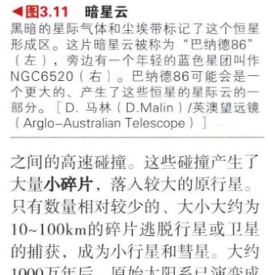
<div class="caption" style="text-align: right; clear: right;">
<strong>图6.11 暗星云</strong><br/>
        黑暗的星际气体和尘埃带标记了这个恒星形成区。这片暗星云被称为“巴纳德86”（左），旁边有一个年轻的蓝色星团叫作NGC6520（右）。[D. 马林 (D. Malin) / 英澳望远镜 (Anglo-Australian Telescope)]
    </div>
<p>凝聚核的形成极大地加速了形成第一批小团物质的关键过程。一旦这些团块形成，它们便会通过吸附其他团块快速成长。（想象一下，猛烈的雪灾引发滚雪球，它越滚越大，越大便会遇到越多的雪花）。由于团块越长越大，表面积增加，所以它们横扫新物质的速度大大加快。这个<strong>吸积</strong>过程——碰撞和吸附在一起的小物体逐渐增长——产生了卵石大小、棒球大小、篮球大小，以及更大的物体。</p>
<p>模拟结果表明，或许在100,000年的短时间里，吸积导致形成了几百千米大小——小卫星的大小——的物体。到那个时候，它们的引力拉拽已强大到足以影响它们的邻居。天文学家称这些物体为“<strong>星子</strong>”——它们是太阳系的积木。图6.12显示了一个被正在生成星子的物质盘包围着的邻近恒星的红外图像。</p>

<div class="caption" style="text-align: left; clear: left;">
<strong>图6.12 新生的太阳系？</strong><br/>
        这是到地球约25光年的明亮恒星北落师门的红外图像，由斯必泽太空望远镜拍摄，显示了正在进行吸积过程的环绕恒星的吸积盘。恒星本身位于淡黄色斑点的中心。[美国国家航空航天局 (NASA)]
    </div>
<p>星子的引力已强大到足以清扫物质——否则这些物质将无法与星子相撞，星子的增长速度加快，使它们能够形成较大的天体，如图6.13(a)和图6.13(b)所示。由于较大的天体有较强的引力，最终几乎所有的原始材料都被扫成了几颗大的<strong>原行星</strong>，并最终随时间演变成我们今天所知道的行星，如图6.13(c)所示。请注意，余下的天体的轨道是如何随着天体数目的减少而变得排列更稀疏、更接近圆形的。恰好产生4颗类地行星的这样一个特殊模式是一个纯粹偶然的机会——吸积过程的细节是随机的。然而，无论能形成几颗行星，计算机模型的确从总体上重现了行星的近圆轨道，以及随着距太阳越来越远，它们的轨道间距逐渐增加。</p>
<p>由于原行星的增长，竞争过程变得重要。它们强大的引力场导致了许多星子和原行星之间的高速碰撞。这些碰撞产生了大量小碎片，落入较大的原行星。只有数量相对较少的、大小大约为10~100km的碎片逃脱行星或卫星的捕获，成为小行星和彗星。大约1000万年后，原始太阳系已演变成8颗原行星、几十颗原卫星和1颗居于中心的发光的<strong>原太阳</strong>。清扫太阳系空间中的小“垃圾”的过程持续了大约10亿年以上。这是一段激烈的陨石撞击的岁月，在月球和其他地方造成的结果今天仍然很明显。</p>
<h3>太阳系的分化</h3>
<p>上面所描述的凝聚理论至少可以从广义上解释太阳系的行星和大尺度结构的形成。那么，关于类地行星和类木行星之间的区别，该理论又能说明些什么呢？要明白为什么行星的成分取决于其在太阳系中的位置，我们必须考虑太阳星云的温度曲线。</p>

<div class="caption">
<strong>图6.13 吸积中的行星</strong><br/>
        最初在内太阳系，许多月球大小的星子围绕太阳运动。渐渐地，它们碰撞和并合，形成了几个在近圆轨道上的大行星。
    </div>
<p>原始太阳系在引力的作用下收缩，随着它逐渐扁平变成盘状，它也逐渐变热。中心附近的密度和温度最大，外围区域中的温度则要低得多。详细的计算表明，核心附近的气体温度是几千开尔文。在距离为10 AU的地方——即现在土星所处位置外面一点儿，温度大约只有100K。</p>
<p>星云内较温暖区域的高温导致尘埃颗粒分裂成分子，这反过来又分裂成激发态的原子。因为尘埃被摧毁的程度依赖于温度，因此，也依赖于它们在太阳星云中的位置。大部分内太阳系的原始尘埃消失在这个阶段，而位于最外围的尘埃可能仍然保持基本完好。</p>
<p>随着尘埃云辐射出热量，其温度到处都在下降——除了最中心，在那里形成了太阳。随着气体的冷却，新的尘埃颗粒开始凝聚（或结晶），很像地球上的雨滴、雪花、冰雹凝聚于冷而潮湿的空气中。这似乎很奇怪，虽然早期有大量的星际尘埃，但它却部分地被摧毁了，稍后又再次形成。不过，一个关键的变化发生了。最初，星云气体均匀地夹杂着尘埃颗粒的所有成分，尘埃重新形成后，颗粒的分布变得非常不同。</p>
<p>图6.14画出了吸积开始之前，原始太阳系各个部分的温度。在任何给定的位置，唯一能凝聚出来的物质是那些能够在某个地方的温度下存在的物质。正如在图中标出的那样，在最里面的区域，即在目前水星的轨道附近，只有金属颗粒形成——这里太热了，以至于别的东两无法存在。稍远处，在约1 AU处，岩石、硅酸盐颗粒可以形成；在约3 AU或4 AU处，可能存在水冰。以此类推。随着离太阳越来越远，越来越多的物质聚合在一起。</p>
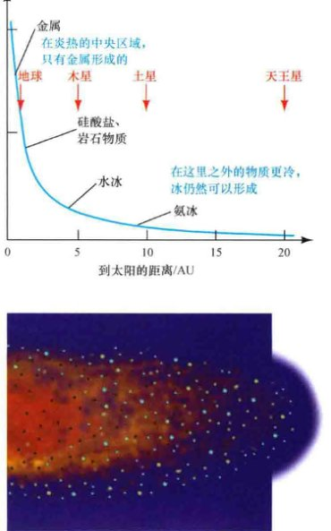
<div class="caption" style="text-align: right; width: 45%; float: right;">
<strong>图6.14 早期太阳星云的温度</strong><br/>
        (a) 从理论上计算的整个原始太阳星云的温度变化，如图(b)中所示，它显示了一半的盘。注意内侧岩石颗粒和外侧冰颗粒之间的区别。
    </div>
<p>在原始太阳系的内部区域，当平均温度约1000K时，气态到固态的凝聚开始了。这里的环境太热，以至于冰无法存在。许多重元素，如硅、铁、镁、铝，与氧结合产生多种岩石材料。因此，很自然地，内太阳系的尘埃颗粒主要是岩石或金属，它们最终成为原行星和行星。</p>
<p>在原始行星系统的中部和外部，距离中心5AU之外，温度足够低，丰富的气体——水蒸气(H<sub>2</sub>O)、氨(NH<sub>3</sub>)、甲烷(CH<sub>4</sub>)——凝聚成固体。在氢(H)和氦(He)之后，碳(C)、氮(N)、氧(O)在宇宙中是最常见的材料。其结果是，只要在有冰粒形成的地方，它们的数量都会大大超过在太阳星云的同位置凝聚而出的岩石和金属颗粒。因此，在这些距离处形成的天体是在冷的条件下形成的，主要是低密度的冰质材料。这些古老的碎块注定将形成类木行星的核心。</p>
<span class="concept-check">概念理解检查：凝聚理论如何解释行星们有圆形的、近乎共面的轨道，以及类地行星和类木行星间的巨大差异？</span>
<h2>6.7 类木行星与行星碎片</h2>
<p>上面描述的凝聚-吸积图景已经成为类地行星形成的公认模型。然而，虽然类似的过程也可能发生在太阳系外围，但巨型类木行星的起源却不那么明显。两个不尽相同的看法已经出现。</p>
<h3>创造类木行星世界</h3>
<p>首先，更加常规的情景描绘于图6.15中。因为可以很轻松地获取到以丰富的冰颗粒形式呈现的原材料，太阳系外围的原行星迅速成长，其质量很快增加到足够大，以至于其强大的引力场可以直接从太阳星云中捕获大量的气体。在这个被叫作“<strong>核心吸积理论</strong>”的观点中，四个较大的原行星成为类木行星的核心，所捕获的气体成为它们厚厚的大气。更小的、内侧的原行星从来没有达到过这个阶段——这是它们的质量仍然相对较小的另一个原因。</p>

<div class="caption" style="text-align: right; clear: right;">
<strong>图6.15 太阳系的形成</strong><br/>
        行星形成的凝聚理论（未按比例绘制）。(a)在太阳星云收缩后变得平坦化，形成一个旋转盘。(b)尘埃颗粒作为凝聚核，与团块物质碰撞，粘在一起，并成长为月球大小的星子。(c)经过几百万年，形成中的太阳开始驱逐云气。(d)星子不断碰撞和成长，气态巨行星形成。(e)在超过约一亿年的过程中，星子聚合或被抛出，留下大行星。
    </div>
<p>最近，一些天文学家强调，这幅图景存在一个潜在的严重障碍：有可能没有足够的时间来让这些事件发生。最年轻的恒星显然会经过被称为“金牛T阶段”的一个高度活跃的演化阶段，在这个阶段，它们的辐射和恒星风变得非常剧烈。在此期间，许多行星之间的星云气体被吹走，进入星际空间（图6.16）。</p>

<div class="caption">
<strong>图6.16 金牛T型星</strong><br/>
        (a)来自初生太阳的强大的恒星风吹散了太阳星云的气体盘，(b)只留下巨行星和星子。恒星演化的这一阶段发生在星云形成仅仅几百万年后。
    </div>
<p>问题是，当这一切发生时，星云盘的年龄最多只有几百万年，因此，留给较大的类木行星的核心成长以及在它被摧毁之前从星云中捕获气体只有很少的时间。此外，一些研究人员认为，大多数恒星都诞生在相对密集的恒星环境里，正在形成中的恒星之间的近距离交会可能会在比这一事件更早的时候破坏许多盘，或许只会给巨行星几十万年的时间来形成。</p>
<p>第二个巨行星的形成方案认为，巨行星形成的根源是不稳定性，这个不稳定性产生于太阳星云较冷的外围区域。在那里，云的一部分开始因为自己的重力而坍缩——这一图景与拉普拉斯最初的想法差别不是很大——在较小的尺度上模仿最初的星际云坍缩。在这个另类的<strong>引力不稳定理论</strong>中，如图6.17所描绘的，类木的原行星从星云气体直接形成，跳过了最初的凝聚-吸积阶段，因此不超过1000年就能获得它们的大部分质量。从一开始，这些最初的原行星就有足够强大的引力场，能够从太阳星云“舀起”更多的气体和尘埃，使它们能够在气体供应被驱散前成长为我们今天所看到的巨行星。</p>

<div class="caption" style="text-align: right; clear: right;">
<strong>互动图6.17 木星凝聚</strong><br/>
        作为大质量原行星核心成长理论的另一个选项是星云气体吸积理论——一些或全部的巨行星可能直接通过太阳星云外围冷气体的不稳定性而形成。(b)仅仅几千年后，四颗气态巨行星便形成了。
    </div>
<p>如果这两个理论最终都能导致气体丰富的类木行星形成，那我们如何区别它们呢？一种可能的方式涉及其核心的组成。因为在不稳定理论中，行星的形成是如此之快——计算机模型表明，其核心应该包含不超过大约6个地球质量的岩石材料。核心吸积理论则相反，预测了大得多的核心质量——高达20倍地球质量。未来的太空探测器对木星内部的详细测量可以解决这个争议。</p>
<h3>巨行星的迁移</h3>
<p>巨行星的形成在许多方面仍然没有得到解决。成长中的行星之间，以及行星和它们的环境之间的相互作用，可能对确定如何以及在何处形成行星起着至关重要的作用。一个特别有趣的“剧本”是，有这样一种可能性：木星——也许所有四颗巨行星——形成时的位置比目前的轨道离太阳远得多，它随后向内“迁移”。这种可能的迁移通过类木原行星的位置变化示意性地展示在图6.15和6.17中。</p>
<p>行星迁移的想法在20世纪80年代中期被提出。对这一想法的观测支撑出现在1999年，当时，伽利略号任务的科学家（见探索6-2）宣布，在木星大气层中的气体氮、氩、氪、氙的浓度比预期要高得多。这些被认为是由被捕获的星子带进这颗行星的气体，在木星目前轨道的典型温度下，不可能被保持在星子冰中。相反，它们意味星子——以及（据推测）木星本身——形成在低得多的温度下。要么星云比以前认为的更冷，要么木星形成于现在的柯伊伯带之外！</p>
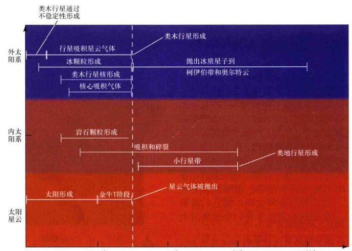
<div class="caption">
<strong>图6.18 太阳系形成</strong><br/>
        在第一个十亿年里，我们的太阳系发生的一些关键事件的示意时间线。不同的轨迹显示了太阳、太阳星云，以及内、外太阳系的演化。
    </div>
<p>从天文学的角度，刚刚描述的事件不会花费太长时间。在扁平的太阳星云出现后，巨行星在几百万年内形成——相比太阳系46亿年的年龄，这只是一眨眼的时间。在那时，新生太阳表面上剧烈的活动形成的强烈辐射和太阳风吹散了星云气体，停止了星云的进一步生长。内太阳系的吸积进展得较为缓慢，也许花费了上亿年才形成了我们今天所知的行星[如图6.15(e)所示]。</p>
<span class="concept-check">概念理解检查：为什么太阳形成的速率对类木行星的形成理论很重要？</span>
<h3>小行星和彗星</h3>
<p>在内太阳系，逃逸的星子碎片被类地行星中的某一个捕获，获得来自这些天体的反复的“引力协助”，并最终被推出到超出了火星轨道（见探索6-1）。要扫除太阳系内部的行星际“垃圾”，大约需要十亿年。火星和木星之间的小行星带的无数岩石没能凝聚形成一颗行星。也许，太靠近木星强大的引力场使它们的碰撞太具有毁灭性而一直无法凝聚。其结果是岩石星子组成了一条带子，它们还在继续碰撞、偶尔会破碎，但从来不曾凝聚成一个更大的天体。</p>
<p>在外太阳系，随着四大巨型类木行星的形成，剩下的星子都受到这些行星强引力场的支配。在大约一亿年的时间内，由于与巨行星——特别是与天王星和海王星——的相互作用，很多外围区域的行星际碎片被扔进一条带它们远离太阳的轨道中（图6.19）。天文学家认为，这些冰质天体现在形成了奥尔特云，其成员偶尔会作为彗星光临太阳系的内部。</p>
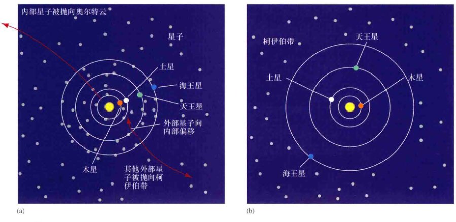
<div class="caption">
<strong>图6.19 星子抛射</strong><br/>
        冰质星子的抛射帮助形成了奥尔特云和柯伊伯带。(a)首先，一旦巨行星形成了，剩下的星子就会遍布整个太阳系。与木星和土星的相互作用明显将星子向外“踢”出了非常大的半径（奥尔特云）。(b)经过数亿年，在海王星轨道内的星子都被抛出时，四颗巨行星的轨道都被明显修改了。
    </div>
<p>这个模型的关键预测是，一些原始星子留了下来，形成了一个被称为“柯伊伯带”的宽广的带状区域，其位置超出了海王星轨道。目前已知1200多颗柯伊伯带天体，其直径从50到2000多千米。它们的存在给行星形成的凝结理论提供了有力的支持。</p>
<p>计算机模拟表明，星子的抛射涉及类木行星之间非常复杂的相互作用，因此天王星和海王星将一些天体“踢”向外围的柯伊伯带，但是偏转了另一些天体向内飞向木星和土星，而木星和土星强大的引力场推动这些星子向外到遥远的奥尔特云。如图6.19所示，四颗巨行星的轨道被这些相互作用显著修改。当太阳系外围的彗星被清理干净的时候，木星向内稍微移动接近太阳，其轨道的半长轴减少了十分之几AU。其他巨行星则向外移动——土星约1AU，天王星约3~4AU，海王星约7~10AU。一颗类木行星的生命历程非常不简单！</p>
<p>在这个时期，许多冰质星子也被偏转到太阳系内部，在那里，它们在内行星的演化中发挥了重要作用。凝聚理论中与内行星形成相关的一个长期难题是地球上和其他地方的水和其他挥发性气体是从哪里发源的。在内行星形成时，其表面温度太高、引力又太低，无法捕获 or 保留这些气体。最可能的解释似乎是，内太阳系中的地球和其他地方的水及其他轻气体是由来自外太阳系的彗星带进来的。清除了外太阳系剩余星子的类木行星的引力场将这些冰质碎片“踢进”了偏心轨道。这些碎片轰击着新生的类地行星世界，并在类地行星形成后给它们提供了水。</p>
<span class="concept-check">概念理解检查：你会期望找到围绕其他恒星运转的彗星和小行星吗？</span>
<aside class="sidebar">
<h3>终极问题</h3>
<p>也就是在10年前，天文学家认为我们的太阳系可以作为任何可能存在于地球之外的其他行星系统的普通—典型的例子。哥白尼原理是一项强大的思想，我们认为我们的太阳系没什么特别的。然而，现在发现了许多围绕其他恒星旋转的系外行星，我们不再确定我们的太阳系实际上有多么的“正常”。一个基本的问题萦绕着我们：我们的行星系统与宇宙中所有围绕其他恒星运转的行星系统相比，究竟有多么普通？又有哪些不同？</p>
</aside>
<hr/>
<h2>章节回顾</h2>
<aside class="sidebar">
<h3>小结</h3>
<ol class="question-list">
<li><strong>太阳系</strong> (p.62) 由太阳和一切绕其运行的天体组成，包括八大行星、绕它们自转的卫星以及行星际空间中的许多小天体。<strong>比较行星学</strong> (p.63) 对比在太阳系和其他地方发现的各种天体的性质，以了解行星在何种条件下形成和发展。</li>
<li>各大行星以同一情形绕太阳自转——以从地球的北极上方看为逆时针的方向沿着位于黄道面的近圆形轨道运行。最里面的一颗行星——水星的轨道是最古怪的，并具有最大的轨道倾角。随着逐渐远离太阳，行星轨道之间的间距增加。海王星轨道的直径大约是60AU。</li>
<li>行星的平均密度 (p.65) 是行星的总质量除以总体积。太阳系最内层的四颗行星——水星、金星、地球和火星——与地球的平均密度相仿，它们总体是岩石成分，被称为<strong>类地行星</strong> (p.66)。外围的<strong>类木行星</strong> (p.66)——木星、土星、天王星、海王星——的密度比类地行星低得多，总体上是由气态或液态的氢和氦组成。与类地行星相比，类木行星的体积和质量都更大、自转更快，并具有较强的磁场。此外，类木行星都有光环和许多卫星。</li>
<li><strong>小行星</strong>，即“小个头的行星”，是太阳系中的小天体，它们均小于我们的卫星——月球。其中大部分在一条位于火星和木星轨道之间，被称为小行星带的宽阔带状区域中运行。<strong>彗星</strong>是主要存在于太阳系外围的大块的冰。它们在行星天文学中的重要性在于，它们在事实上被认为是太阳系形成的“剩余”材料，因此含有非常早期的太阳系形成演化阶段的线索。<strong>柯伊伯带</strong>是一个位于海王星轨道之外的冰质天体带。</li>
<li>根据太阳系形成的<strong>星云理论</strong> (p.74)，大量的尘埃和气体云在自身重力下开始收缩。当这件事发生后，它开始旋转得越来越快，并保持角动量守恒，最终形成一个旋转盘——<strong>太阳系星云</strong> (p.74)，从中产生了行星。<strong>凝聚理论</strong> (p.74) 植根于星云理论中，并考虑了太阳加热对行星形成过程的影响。在任何给定的位置，太阳星云的温度都决定着哪些物质可以凝聚出来，因此也决定了形成于那里的星子 (p.76) 和行星的成分。类地行星是岩质的，因为它们在炎热的太阳星云内部区域形成，靠近太阳，岩石和金属材料凝聚而出。在更远的地方，星云更冷，可以形成冰。</li>
<li>岩石和金属尘埃颗粒在内太阳系凝结出来。在太阳系形成后的第一个1亿年，类地行星由这些星子吸积和并合而形成。少数几个大型天体占据主导，最终成为我们今天看到的四颗类地行星。这个过程的最后阶段可能以行星大小的天体之间的灾难性碰撞为标志。</li>
<li>在外太阳系，星云更冷，水和氨冰可以形成。根据<strong>引力不稳定理论</strong> (p.79)，类木行星通过星云盘的不稳定性直接而迅速地形成。在更标准的<strong>核心吸积理论</strong> (p.78) 中，冰质的原行星核心变得如此之大，它们可以从星云中捕获氢气和氨气。在星云形成几百万年之后，且星云被仍在形成的太阳吹出的强大太阳风吹散之前，巨行星和气体之间的相互作用可能导致前者从它们的初始轨道向内转移。</li>
<li><strong>小行星带</strong>是一个岩石星子的集合，因为木星的强大引力而永远无法并合成一颗行星。在外太阳系，许多剩下的星子都被外行星的引力场抛射进柯伊伯带和奥尔特云，其中一些偶尔以彗星的形式参观内太阳系。对冰质星子的驱逐可能显著改变了巨行星的轨道，天王星和海王星可能会在这段时期向外迁移。地球上大量的水是由从外太阳系偏转到我们的世界的星子带进来的。</li>
</ol>
</aside>
<section class="exercises">
<h2>复习与讨论</h2>
<ol class="question-list">
<li><strong>LO1 POS</strong> 什么是比较行星学？为什么它有用？什么是它的最终目标？</li>
<li><strong>LO2</strong> 命名和描述在太阳系中发现的各种不同类型的天体。给每一种一个显著的特征，包括提及的行星际空间。</li>
<li>要确定一个行星的质量，为什么需要知道该行星到我们的距离是多少？</li>
<li><strong>LO3</strong> 说出类地行星和类木行星之间三个重要的不同之处。</li>
<li><strong>LO4 POS</strong> 为什么小行星和流星对行星科学家很重要？</li>
<li>彗星一般在撞击地球的大气层后会气化。那么如何才能知道它们的成分？</li>
<li><strong>LO5 POS</strong> 什么是在星云理论中缺失或未知的、太阳系起源的现代凝聚理论的关键因素？</li>
<li>给出凝聚理论解释现今太阳系的观测特征的三个例子。</li>
<li><strong>LO6</strong> 说明类地行星是如何形成的。</li>
<li>为什么类木行星的质量比类地行星大得多？</li>
<li>太阳星云的温度和结构如何决定行星的成分？</li>
<li><strong>LO7</strong> 说明类木行星两种可能的形成方式。太阳在这个过程中发挥什么作用？</li>
<li>随着太阳系的冰质星子被清除，外行星发生了什么？</li>
<li><strong>LO8</strong> 柯伊伯带和奥尔特云是如何形成的？</li>
<li>描述在地球上看见的某个彗星的一种可能的历史——从它在太阳星云中木星轨道附近的某个地方诞生开始。</li>
</ol>
<h2>概念自测：选择题</h2>
<ol class="question-list">
<li>行星的质量可以很容易地通过测量该行星的下列哪一项来确定？ (a) 卫星的轨道； (b) 角直径； (c) 在天空中的位置； (d) 围绕太阳的公转速度。</li>
<li>如果我们要在一个足球场中构建一个比例精确的太阳系模型，一端是太阳，另一端是海王星，那么最靠近场地中央的行星将是： (a) 地球； (b) 木星； (c) 土星； (d) 天王星。</li>
<li>内行星与外行星相比，往往有： (a) 更少的卫星； (b) 更快的自转速度； (c) 更强的磁场； (d) 更强的引力。</li>
<li>一个岩石组成的太阳系天体的大小和小城市相当，它最有可能是一个： (a) 流星体； (b) 彗星； (c) 小行星； (d) 行星。</li>
<li>小行星大多是： (a) 在火星和木星之间被发现； (b) 就像其他行星，只是更年轻； (c) 就像其他行星，只是更小； (d) 在我们太阳系的边缘被发现。</li>
<li>在太阳系形成的领导理论中，行星： (a) 随着与另一颗恒星的近距离交会被从太阳抛出； (b) 形成于与形成太阳相同的扁平、旋转的气体云； (c) 比太阳年轻得多； (d) 比太阳年老得多。</li>
<li>内行星形成： (a) 当太阳的热量破坏了内太阳系所有更小的天体时； (b) 在太阳系外围，然后通过与木星和土星的相互作用向内偏转； (c) 由于星子的碰撞和并合； (d) 当一个更大的行星碎成了几片时。</li>
<li>太阳系为什么发生了分化？ (a) 外太阳系的所有重元素沉到中心； (b) 内太阳系的所有轻元素变成了太阳的一部分； (c) 内太阳系的所有轻元素被以彗星的形式带走； (d) 只有岩石和金属微粒可以在接近太阳处形成。</li>
<li><strong>VIS</strong> 根据图3.14，在现在的小行星带中心的位置，太阳星云的温度为： (a) 2000K； (b) 900K； (c) 400K； (d) 100K。</li>
<li><strong>VIS</strong> 根据图3.18（“太阳系形成”），类木行星形成： (a) 与类地行星同时； (b) 在类地行星形成后； (c) 在太阳形成后几百万年； (d) 与奥尔特云的形成同时。</li>
</ol>

<h2>问答</h2>
<p>每个问题前圆点的数目大致说明了该题的难度。</p>
<ol class="question-list">
<li>● 只有水星和火星有显著偏离圆形的轨道。计算这些行星的近日点和远日点到太阳的距离。 ∞ (详细说明2-1)</li>
<li>● 使用牛顿的万有引力定律来计算你在下列天体上的体重： (a) 地球、 (b) 火星、 (c) 行星谷神星和 (d) 木星（暂时忽略这个星球没有固体表面！）。 ∞ (2.7节)</li>
<li>● 假设太阳系7000个小行星每个的平均质量约为 10<sup>17</sup> kg。将所有小行星的总质量与地球的质量进行比较。</li>
<li>●● 短周期彗星的常规定义为轨道周期不到200年的彗星。一颗近日距为0.5AU的短周期彗星，其可能的最大远日距是多少？这个地方相对于外行星位于哪里？</li>
<li>●● 一块星际云碎片的直径为0.2光年，自转速度为每百万年一圈。现在它开始塌缩。假设质量保持不变，估计星云的自转周期。当它缩小到 (a) 太阳星云的大小，直径100AU； (b) 地球轨道的大小，直径2AU。</li>
<li>●● 考虑一颗行星因为从太阳星云吸积物质而成长。随着该行星的成长，其密度保持大致恒定。在这颗行星表面的重力是增加？减少？还是保持不变？如果该行星的半径增加一倍，其表面重力和逃逸速度会发生什么变化？为你的解答给出理由。</li>
<li>● 要形成地球，需要多少个100km直径的岩石 (3000kg/m<sup>3</sup>) 星子？</li>
<li>● 使用文中给出的数据计算，海王星在与星子相互作用使其轨道扩大到现在的尺寸之前，它的公转周期是多少？</li>
</ol>

<h2>实践活动</h2>

<h3>协作项目</h3>
<ol class="question-list">
<li>组成一个小组，确定探索6-2中所述的哪些太空任务产生了有关太阳系的最有趣的结果。解释你的理由。上网去研究该部分提到的其他任务中的任意一个，向全班展示该任务的主要目标和结果。</li>
<li>政府对在小行星上采矿的行为应该采取什么政策？为该政策做出解释。</li>
</ol>

<h3>个人项目</h3>
<ol class="question-list">
<li>你可以将黄道面——行星公转的轨道平面——变得可视化，只需要注意白天太阳的路径和满月在一个晚上的路径。如果你站在同一点——如你的后院或屋顶——看会更有用。对了解方向的一般概念也会很有帮助。（西方是太阳落山的方向！）太阳、月亮和行星的运动被限制在我们天空中一条狭窄的通道中。这个通道反映了太阳系的平面——黄道。</li>
<li>唯一区别一颗小行星和一颗恒星的方法就是在几个晚上都观测它。《天空和望远镜》及《天文学》杂志经常发布特别著名的小行星的星表。寻找谷神星、智神星或最亮的小行星灶神星。使用星表来定位相应的星空区域，将双筒望远镜瞄准天空中对应的位置。你也许能从视场中挑出小行星。如果你不能，则将整个视场大概画下来，然后过一两个晚上再进行观测，移动了的“恒星”就是小行星。</li>
</ol>
</section>
</article>